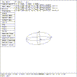
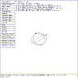
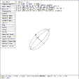

 Figure (ese-xrot): Solid Edit Rotation of 45 Degrees about X
The rotate operation is initiated by either selecting Rotate on the menu screen with the mouse, by depressing the Solid Rotate button on the button box, or by entering the press srot command on the keyboard.
mged> Select the ``Rotate'' entry in the solid edit menu
mged> p 45 0 0
mged>
Figure (ese-xrot) shows the rotation of the ellipsoid about its X axis. The angle of rotation is counter-clockwise when viewed in the positive X direction. The direction cosines of vectors VB and VC are changed by 45 .
 Figure (ese-yrot): Solid Edit Rotation of 45 Degrees about Y
mged> Select the ``Rotate'' entry in the solid edit menu
mged> p 0 45 0
mged>
Figure (ese-yrot) shows the rotation of the ellipsoid about its Y axis. The angle of rotation is counter-clockwise when viewed in the positive Y direction. The rotation is made from the original view, and the restoration of the view is not necessary.
 Figure (ese-zrot): Solid Edit Rotation of 45 Degrees about Z
mged> Select the ``Rotate'' entry in the solid edit menu
mged> p 0 0 45
mged>
Figure (ese-zrot) shows the rotation of the ellipsoid about its Z axis. The axis of rotation is counter-clockwise when viewed in the positive Z direction. The command
mged> p 0 0 0
mged>
restores the original orientation of the solid.
{kind=link}
{kind=link}
{kind=link}